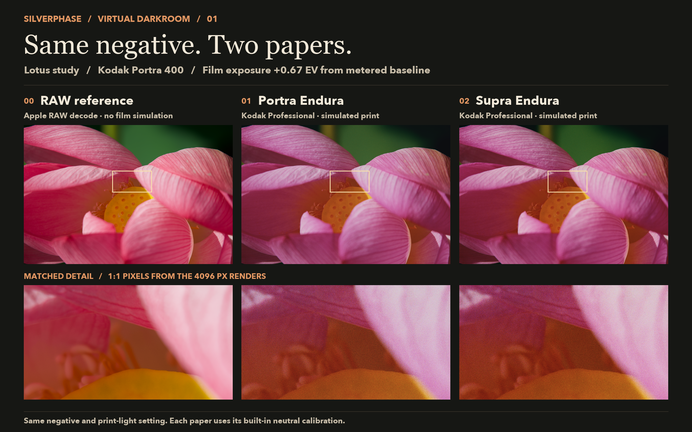
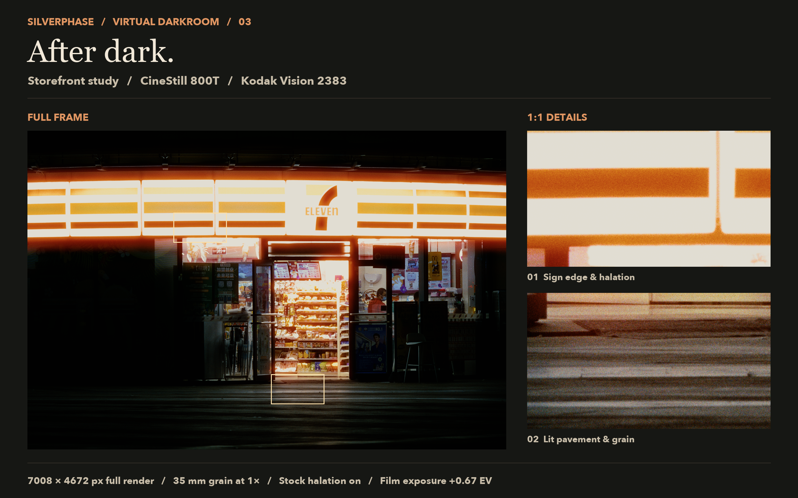

01

01 / 作品展示
同一张底片，换张相纸就会有不同的效果。这些是 Silverphase 的模拟成片，不是实体相纸的扫描。
02 / 工艺流程
颗粒、光晕和片边在工艺中形成。各平台的控制项和输出选项有所不同。
导入系统支持的 RAW 或普通图像。
选择胶片，调整测光和胶片曝光。
调整底片的显影表现。
选择相纸，调整反差与滤色。
导出成片，或保留 Cineon 中间文件继续调色。
03 / 下载
Apple 芯片 · macOS 15 或更高版本
下载 Mac 版 ↗iOS 或 iPadOS 18 或更高版本
在 App Store 查看 ↗iPhone 和 iPad 测试版
加入测试 ↗Mac DMG 为临时签名，未经 Apple 公证。iPhone 和 iPad 版在中国大陆区以外的 App Store 提供。可安装版本以 App Store 和 TestFlight 各自显示为准。 安装与校验指南 ↗